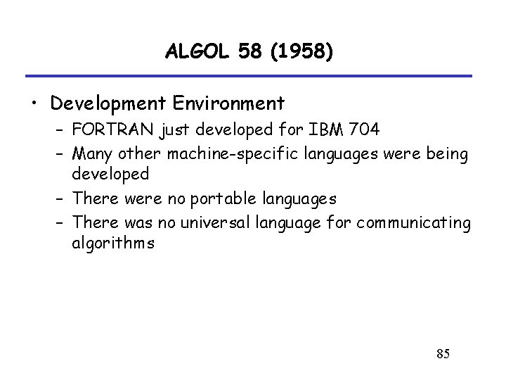
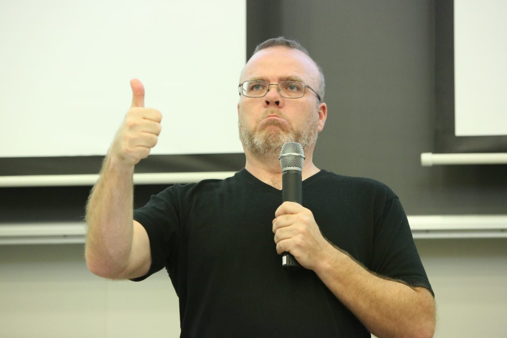

2. 1949: Assembly

4. 1957: FORTRAN
Fortran is used in programs that benchmarked the world's fastest supercomputers

5. 1958: ALGOL (Algorithmic Language)

6. 1959: COBOL
Common business oriented language
Is very common to find in ATMs, telephone systems and general business finance and administrative systems.

7. 1959: LISP

8. 1964: BASIC
(Beginner’s All-Purpose Symbolic Instruction Code)

Was developed by a group of students at Dartmouth College.

9. 1970: PASCAL
It was favored by Apple in the company’s early days, because of its ease of use and power.

10. 1972: Smalltalk
11. 1972: C
12. 1972: SQL
13. 1983: Objective-C
14. 1983: C++
.jpg)
One of the most widely used programming languages
15. 1987: Perl

16. 1990: Haskell

17. 1991: Python
Python is named after the comedy group Monty Python

18. 1991: Visual Basic

19. 1993: Ruby
20. 1995: Java

Created by James Gosling

21. 1995: PHP
Created by Rasmus Lerdorf

22. 1995: JavaScript
23. 2000: C#
24. 2003: Scala
25. 2009: Go
26. 2014: Swift